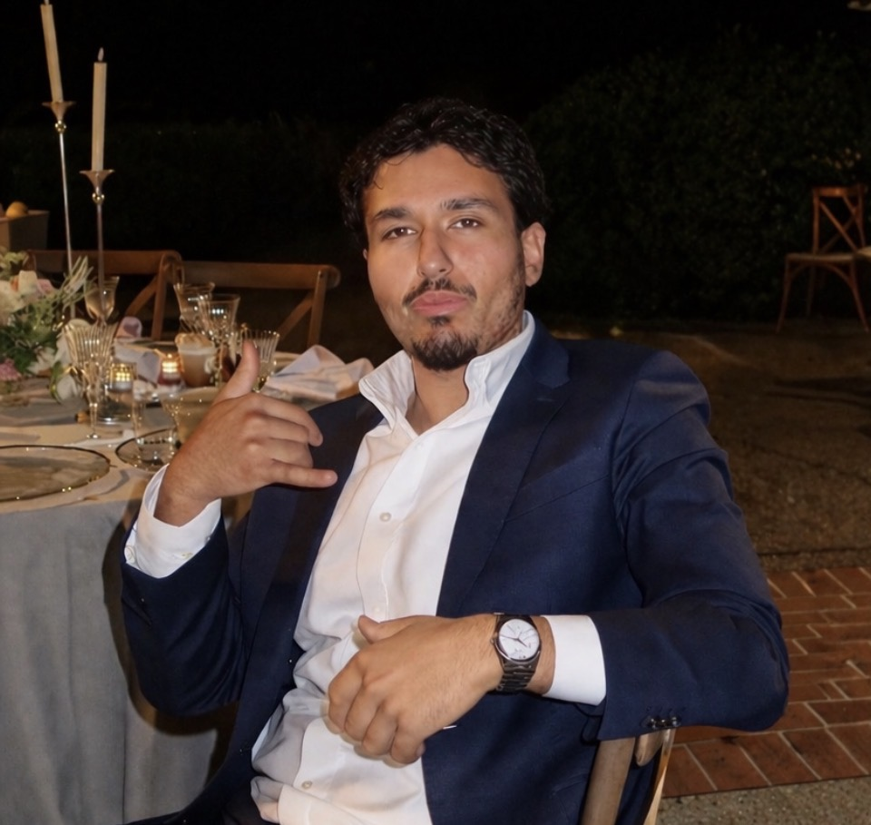

Yayzar was built around a real operator problem: small teams need better account context without spending hours building lead lists manually.
Founder
Quemars Azizi
Founder of Yayzar, software engineer, and computer science graduate from CSU East Bay.

Builder story
Building practical AI software for businesses that need momentum.
Quemars Azizi is a founder and software engineer focused on turning AI, local business data, and sales workflow automation into products that feel useful on day one. With a computer science background from CSU East Bay, he builds across product design, frontend systems, data workflows, CRM logic, and AI-assisted account intelligence.
Quemars focuses on clean interfaces, practical workflows, and systems that can grow from demo to production.
The work is founder-led, fast-moving, and grounded in helping businesses find clearer opportunities in their local markets.
Mission
Make sales intelligence accessible to local operators.
Yayzar exists to give founders, agencies, and sales teams a sharper way to discover nearby businesses, understand account gaps, and act with confidence. The goal is not just to show data. The goal is to help teams know who to contact, why now, and what message will feel relevant.